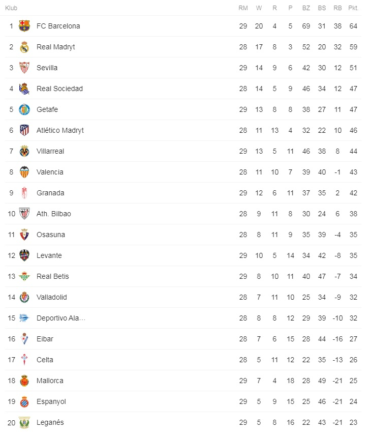
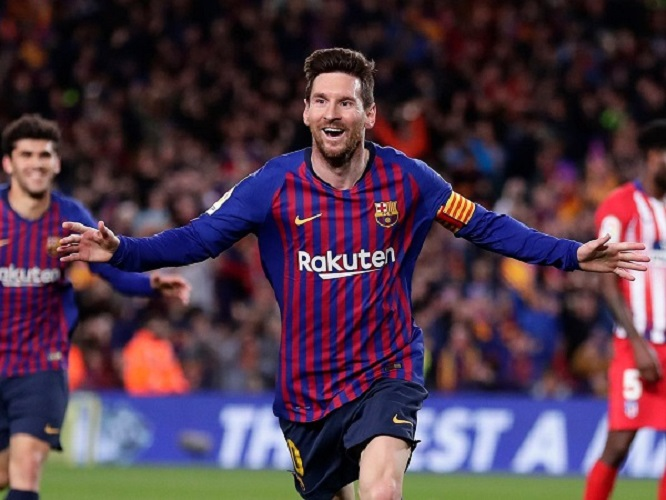
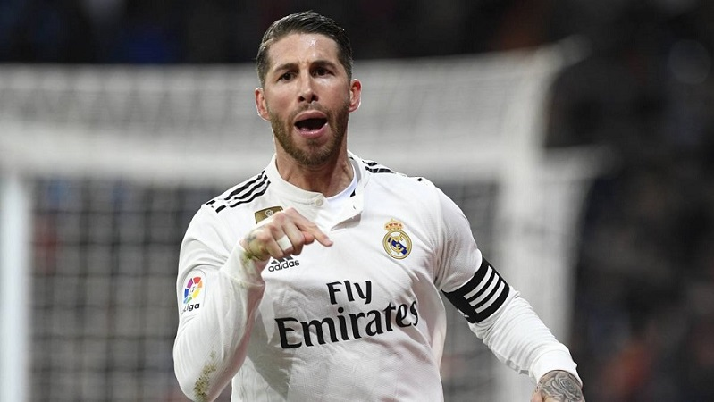
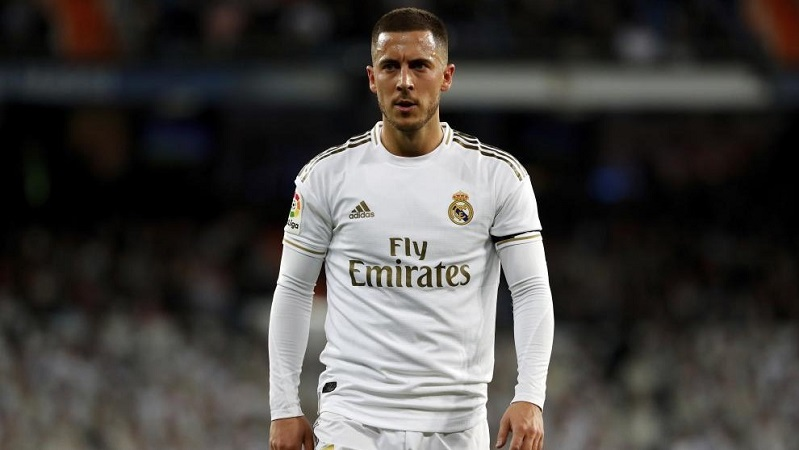
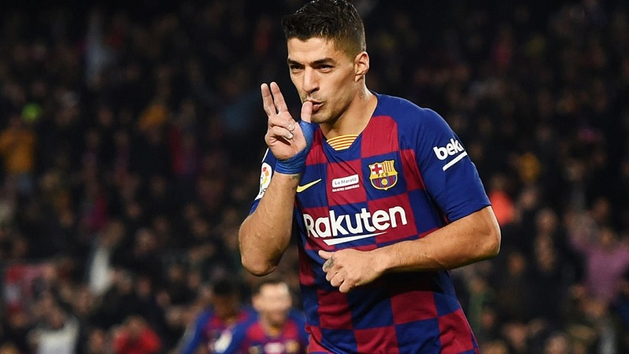

|  | Przedstawiona obok tabela pokazuje sytuacje w tabeli na dzień 16 maja 2020 roku. Po 29 kolejkach hiszpańskiej La Ligi na chwile obecną udział w Lidze Mistrzów mają zapewniony 4 pierwsze zespoły tzn. FC Barcelona, Real Madryt, Sevilla i Real Sociedad. |
Lionel Andrés Messi Cuccittini – argentyński piłkarz występujący na pozycji napastnika w hiszpańskim klubie FC Barcelona, której jest kapitanem oraz w reprezentacji Argentyny, której także jest kapitanem. |  |
|  | Sergio Ramos García– hiszpański piłkarz występujący na pozycji obrońcy w hiszpańskim klubie Real Madryt, którego jest kapitanem. Reprezentant Hiszpanii. |
Eden Michael Hazard-belgijski piłkarz występujący na pozycji napastnika w Realu Madryt oraz w reprezentacji Belgii, której jest kapitanem. Brązowy medalista Mistrzostw Świata w Rosji w 2018. |  |
|  | Luis Alberto Suárez Díaz– urugwajski piłkarz występujący na pozycji napastnika w hiszpańskim klubie FC Barcelona oraz w reprezentacji Urugwaju. Złoty medalista Copa América 2011. Uczestnik Mistrzostw Świata 2010, 2014, 2018, Pucharu Konfederacji 2013 oraz Copa América 2016. |